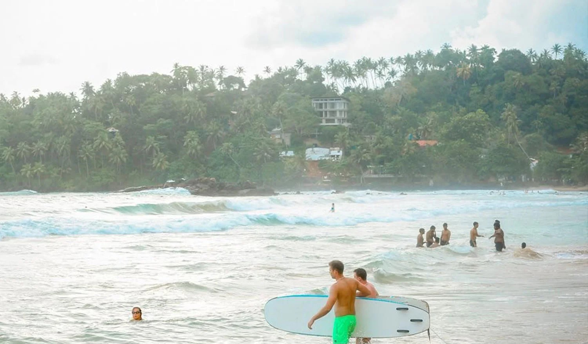
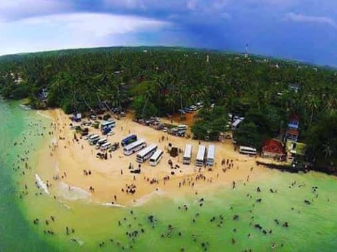
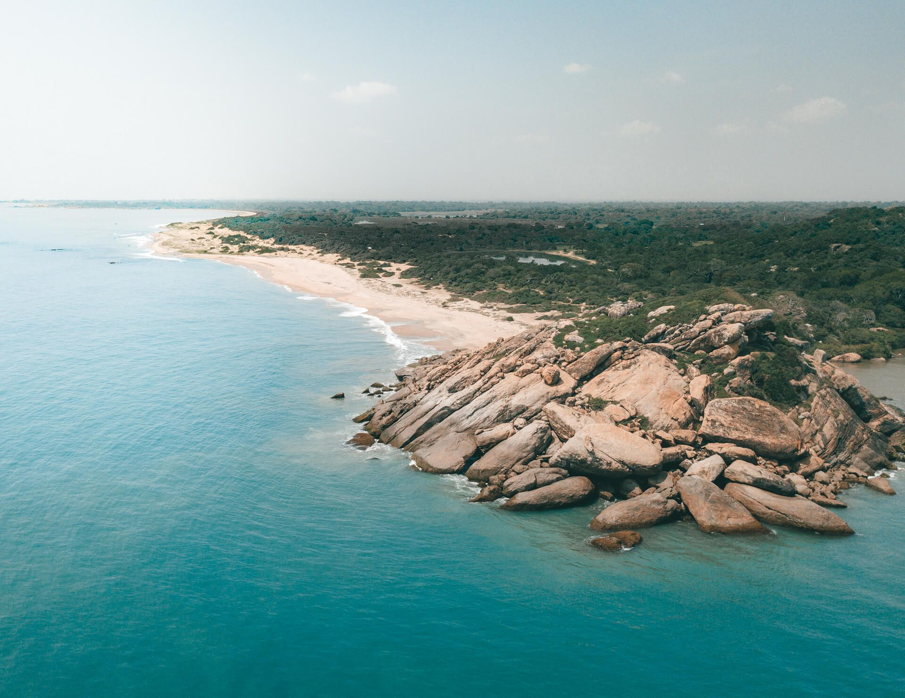
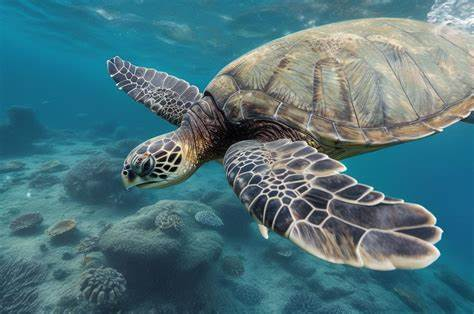

Explore SriLanka's Best Beaches
1.Mirissa Beach
Mirissa Beach is one of the best beaches in Sri Lanka, located along the southwestern coast.One of the highlights of Mirissa Beach is the opportunity to go whale watching.This beautiful beach offers crystal blue waters, perfect for snorkeling and surfing.In addition to water activities, Mirissa Beach also offers stunning viewpoints such as Coconut Tree Hill and Parrot Rock.
Best Time To Visit:November to April and August to October
More Details
2.Unawatuna Beach

Unawatuna Beach is one of the most popular beaches in Sri Lanka. Located just 15 minutes away from Galle, this beach offers a wide range of activities to enjoy. Whether you want to swim in the crystal-clear waters, snorkel among colorful coral reefs, or try your hand at diving, Unawatuna Beach has it all.Unawatuna Beach is also a great place to relax and soak up the sun.
Best Time To Visit:November to April
More Details
3.Hiriketiya Beach in Dikwella
Hiriketiya Beach, often referred to as a "hidden gem" on the south coast of Sri Lanka, is a must-visit destination for beach lovers. This stunning beach offers a perfect blend of natural beauty and tranquility, making it an ideal spot for surfers, swimmers, and families with kids.Hiriketiya Beach is a paradise for surfers of all levels.
Best Time To Visit:November to April and August to October
More Details
4.Polhena Beach in Matara
Polhena Beach, located in Matara, is one of the best beaches in Sri Lanka. With its pristine white sand and crystal-clear waters, it offers the perfect setting for swimming, snorkeling, and sunbathing. The beach is known for its abundance of marine life, including turtles, making it a popular spot for snorkelers and divers.
Whether you're looking to relax on the beach or explore the underwater world, Polhena Beach is a must-visit destination in Sri Lanka.
Best Time To Visit:November to April and August to October
More Details
5.Silent Beach in Tangalle
Silent Beach, also known as Amanwella Beach,is considered one of the most beautiful and unspoilt beaches in the country.Unlike other popular beaches, Silent Beach is not crowded, allowing visitors to enjoy a peaceful and serene atmosphere.However, it is important to note that swimming is not recommended due to the strong currents and big waves. Nevertheless, Silent Beach is perfect for taking long walks along the shore and enjoying the breathtaking sunrise.One of the advantages of visiting Silent Beach is that it is relatively cheaper compared to other touristy beaches in the area.
Best Time To Visit:November to April and August to October
More Details
6.Kabalana Beach in Ahangama

Kabalana Beach in Ahangama is a popular destination for surfers and beach lovers.The beach is known for its excellent surf breaks, making it a favorite spot for both beginners and experienced surfers.If you're not into surfing, you can still enjoy a swim in the calm waters or take a leisurely stroll along the shoreline.
Best Time To Visit:November to April and August to October
More Details
7.Narigama Beach in Hikkaduwa
Narigama Beach in Hikkaduwa is a popular destination for surfers and beach lovers. With its pristine sandy shores and crystal-clear waters, it offers the perfect setting for a relaxing day by the sea.Narigama Beach is less crowded,allowing visitors to have more space and privacy. Whether you want to soak up the sun, take a leisurely stroll along the shore, or simply relax under the shade of a palm tree, Narigama Beach offers the perfect escape.
Best Time To Visit:November to April and August to October
More Details
8.Arugam Bay Beach
Arugam Bay Beach is a paradise for surfers, offering some of the best waves in Sri Lanka. Located on the eastern coast of the island, this beach is known for its white sand, crystal clear waters, and stunning sunrises.In addition to surfing, visitors can enjoy breathtaking views from the Panama viewpoint or relax on the famous Elephant rock while watching the sunset.
Best Time To Visit: April until September,when the waves are at their peak.
More Details
9.Pasikudah Beach in Batticaloa
Passikuda Beach is a stunning beach located in Batticaloa, Sri Lanka. This beach is known for its calm and shallow waters, making it the perfect place for swimming and bathing.Passikuda Beach is also a popular spot for snorkeling, diving, and surfing.One of the highlights of Passikuda Beach is its suitability for children. The lack of deep waters and gentle waves make it a safe and enjoyable place for kids to splash around and have fun.Families can spend quality time together building sandcastles, playing beach games, and enjoying the warm tropical weather.
Best Time To Visit:March to October
More Details
10.Hikkaduwa Turtle Beach
Hikkaduwa Turtle Beach is a popular destination for turtle watching in Sri Lanka. Located in the town of Hikkaduwa, this beach offers a unique opportunity to witness these majestic creatures up close.Visitors can take boat rides or go snorkeling to get a closer look at the turtles in their natural habitat. The evening sundown scene at Hikkaduwa Turtle Beach is also picturesque, making it a perfect spot for capturing beautiful memories.
Best Time To Visit:November to April and August to October
More Details